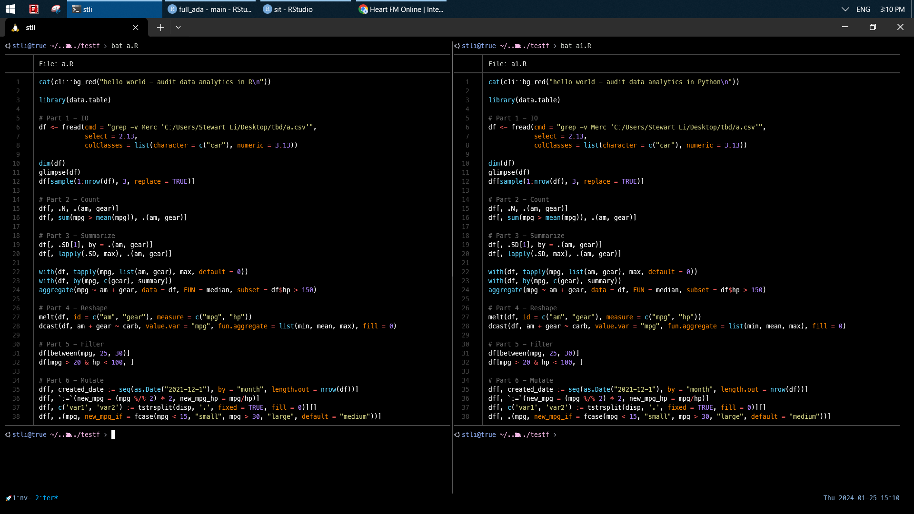
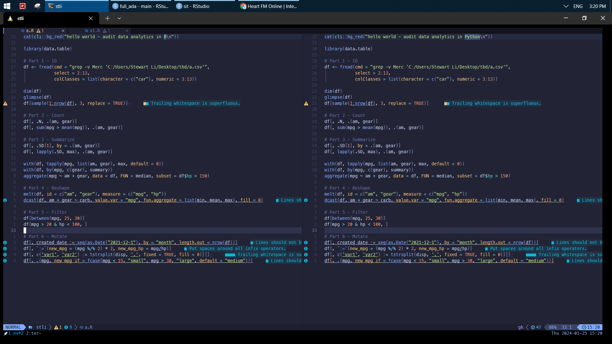
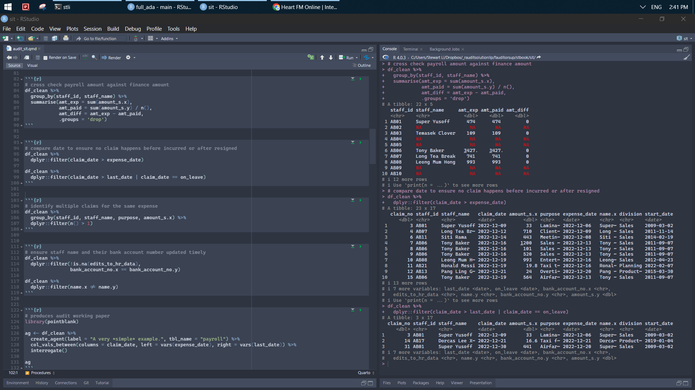
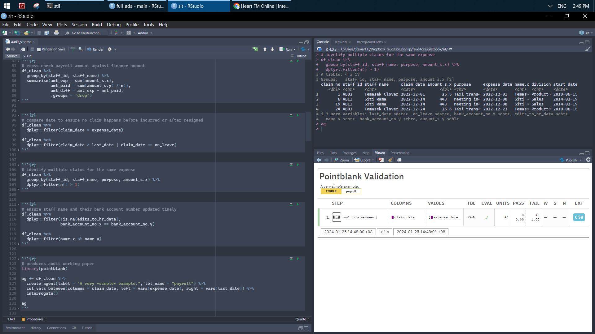

exp_claim_raw <- readxl::read_excel("isca_cpe_2023/1. Anomalies in Payroll data.xlsx",
sheet = 1,
range = "A1:G33") %>%
janitor::clean_names()
hr_data_raw <- readxl::read_excel("isca_cpe_2023/1. Anomalies in Payroll data.xlsx",
sheet = 2) %>%
janitor::clean_names()
pay_data_raw <- readxl::read_excel("isca_cpe_2023/1. Anomalies in Payroll data.xlsx",
sheet = 3,
skip = 2, range = "A3:D25") %>%
janitor::clean_names()
df_comb <- exp_claim_raw %>%
full_join(hr_data_raw, by = c('staff_id' = 'staff_id')) %>%
left_join(pay_data_raw, by = c('staff_id' = 'staff_id'))6 Example 2
[To my understanding] Audit includes tools and work stipulated by Standards. Audit Data Analytics (ADA) replaces excel-related tools with R/Python to improve efficiency/effectiveness. It does not necessarily reduce audit work required by ISCA. The following example is to audit expense claim based on data from payroll, hr, and finance departments, which demonstrates ADA is a vital move for auditors from all possible perspectives.
Compared to excel-related tools, it could be easily used to test audit assertions (e.g., occurrence, existence, completeness, cut-off, valuation, classification) after reconciled in terms of P2P, O2C, Payroll, R2R, GL.
1. benefit: version control diff, lightweight size, powerful 1m rows, automation script.
2. pattern recognition: spot deviation and inconsistency.
It also addresses common mistakes throughout the audit process. For instance,
1. version control: which version of PBC data is the latest?
2. reproducible: my result is different from yours after rerun.
3. report: check if number in working papers tally to those in financial statement.
4. automation: roll out audit work next year by copy+paste.


6.1 Cleaning
df_clean <- df_comb %>%
mutate(across(contains("date"), lubridate::dmy)) %>%
mutate(on_leave = lubridate::dmy(on_leave)) %>%
mutate(staff_name = coalesce(staff_name, name.x))
# check if amount is correct
sum(df_clean$amount_s.x, na.rm = TRUE)
df_clean %>%
distinct(staff_id, amount_s.y) %>%
summarise(app_c = sum(amount_s.y, na.rm = TRUE))sheets <- list("comb" = df_comb, "clean" = df_clean)
writexl::write_xlsx(sheets, here::here(paste0('audit_sit/audit_payroll', Sys.Date(), '.xlsx')))
openxlsx::openXL(here::here("audit_sit/audit_payroll2023-12-22.xlsx"))
df_clean <- readxl::read_excel(here::here("audit_sit/audit_payroll2023-12-22.xlsx")) %>%
mutate(across(c(contains("date"), on_leave), lubridate::dmy))6.2 Procedure
# cross check payroll amount against finance amount
df_clean %>%
group_by(staff_id, staff_name) %>%
summarise(amt_exp = sum(amount_s.x),
amt_paid = sum(amount_s.y) / n(),
amt_diff = amt_exp - amt_paid,
.groups = 'drop') # compare date to ensure no claim happens before incurred or after resigned
df_clean %>%
dplyr::filter(claim_date > expense_date)
df_clean %>%
dplyr::filter(claim_date > last_date | claim_date == on_leave) # identify multiple claims for the same expense
df_clean %>%
group_by(staff_id, staff_name, purpose, amount_s.x) %>%
dplyr::filter(n() > 1) # ensure staff name and their bank account number updated timely
df_clean %>%
dplyr::filter(!is.na(edits_to_hr_data),
bank_account_no.x == bank_account_no.y)
df_clean %>%
dplyr::filter(name.x != name.y)# produces audit working paper
library(pointblank)
ag <- df_clean %>%
create_agent(label = "A very *simple* example.", tbl_name = "payroll") %>%
col_vals_between(columns = claim_date, left = vars(expense_date), right = vars(last_date)) %>%
interrogate()
ag

6.3 Enhanced
df_clean %>%
count(staff_name, sort = TRUE)
df_clean %>%
dplyr::filter(grepl("\\d+?", purpose)) %>%
mutate(purpose = gsub("\\d+?", "", purpose)) %>%
mutate(across(where(is.character), ~na_if(., "AB99"))) %>%
mutate(staff_id = replace_na(staff_id, 0))
df_clean %>%
select(contains("date"), purpose) %>%
mutate(if_taxi = case_when(str_detect(purpose, "Taxi") ~ "taxi",
TRUE ~ "other"),
total_date = lubridate::floor_date(claim_date, "week"),
first_date = first(total_date)) %>%
slice_max(order_by = claim_date, n = 3)
df_clean %>%
dplyr::filter(!is.na(amount_s.x)) %>%
mutate(new = (amount_s.x %/% 100) * 100) %>%
group_by(new, amount_s.x > 300) %>%
summarise(new1 = mean(amount_s.x), .groups = 'drop')df_clean %>%
dplyr::filter(!is.na(staff_name)) %>%
group_nest(staff_id, staff_name) %>%
mutate(new = map(data, ~pluck(.x, 4))) %>%
mutate(new1 = map(new, ~paste(.x, collapse = '|'))) %>%
select(-data, -new) %>%
unnest(new1)
df_clean %>%
dplyr::filter(!is.na(staff_name)) %>%
select(staff_id, staff_name, purpose) %>%
summarise(new1 = paste(purpose, collapse = '|'), .by = c(staff_id, staff_name)) df_clean %>%
select(staff_id, staff_name, division, purpose, amount_s.x) %>%
dplyr::filter(!is.na(purpose)) %>%
separate(purpose, into = c("type", "info"),
extra = 'merge', remove = FALSE, fill = 'right') %>%
group_by(division, type) %>%
summarise(n = n(),
amt_type = sum(amount_s.x), .groups = 'drop') %>%
arrange(-amt_type)library(lubridate)
df_clean %>%
pivot_longer(cols = where(is.Date),
names_to = 'activity_date',
values_to = 'detail_date',
names_pattern = "(.*)_.*",
names_transform = list(activity_date = toupper))